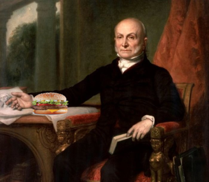

Burgare är en av världens mest kända internationella maträtter som är uppskattade för dess olika typer, kombinationer och variationer
Burger Incorporate är världens största och mest långlevda företag som dedikerar sig till burgare av alla slag för nöjet och uppskattningen för alla.
Historia
Burgarens skapelsen är en historia över tusen år i skapelsen i den kullinära världen.

Hälsa
Även fast burgare är goda och ibland kan det känns som man kan äta flera så är ens diet och intag av mat väldigt viktig för ens hälsa. För mycket av något, speciellt väldigt ohälsosam snabbmat så är detta ännu mer viktigare